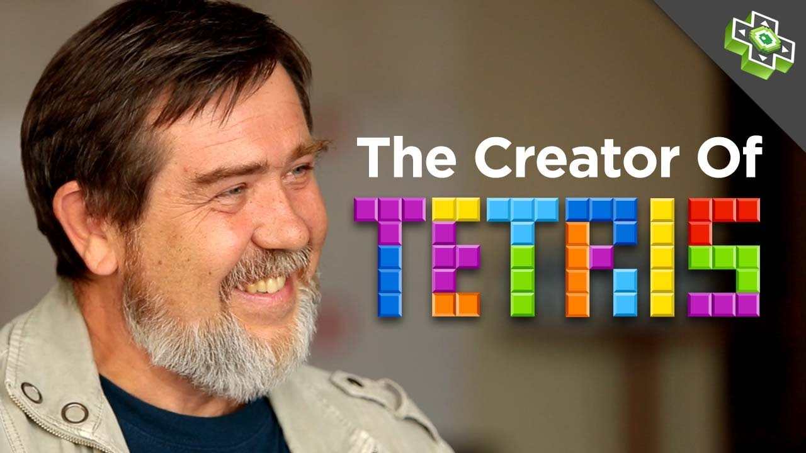

The puzzle game Tetris was design and developed by the Russian computer developer Alexey Leonidovich Pajitnov while he was working for the Dorodnitsyn Computing Centre of the Soviet Academy of Sciences in 1984. For the development of the game, Alexey used the help of Dmitry Pavlovsky and Vadim Gerasimov. After the fall of the Soviet, Union Alexey moved to the United States and in 1996 founded the Tetris Company with the help of the Henk Rogers. Today the license of the game belongs to the Tetris Company.
The game, at first, was developed for the Soviet Union and was letter introduce to the rest of the world (1986).At the beginning, Tetris was only playable from computers. The popularity of the game came from it realises as a title game for the original Nintendo game boy in 1989. The game was very similar to the original design of the game and sold over 35 million copies making it a household game for the system and known to the whole world. The game saw many rereleased into other console game boy colour, NES etc. The popularity of the game further expanded from the smartphone era. It became easy for every smartphone owner to download and played the game.
